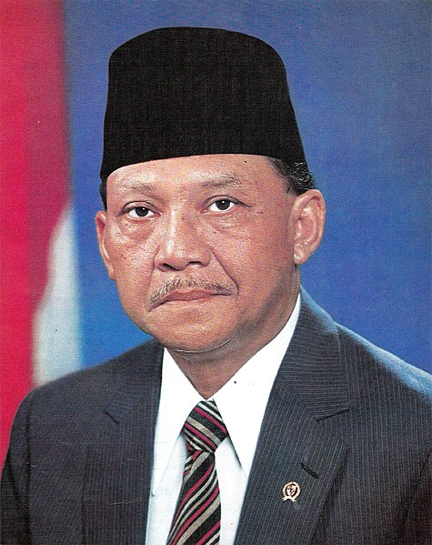
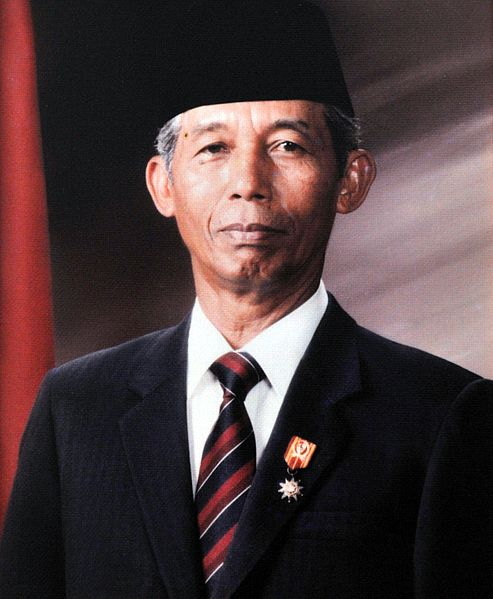
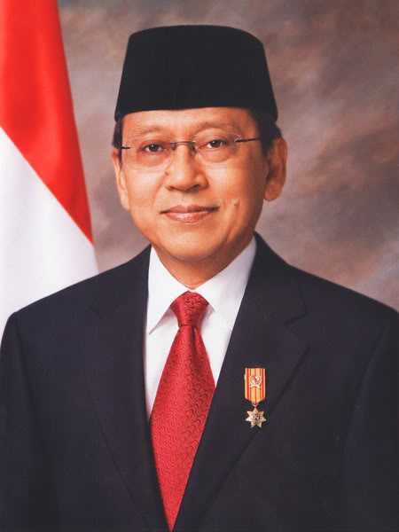

1. Mohammad Hatta

Dr. (H.C.) Drs. H. Mohammad Hatta (populer sebagai Bung Hatta; dengan nama Mohammad Athar 12 Agustus 1902 – 14 Maret 1980) adalah negarawan dan ekonom Indonesia yang menjabat sebagai Wakil Presiden Indonesia pertama. Ia bersama Soekarno memainkan peranan sentral dalam perjuangan kemerdekaan Indonesia dari penjajahan Belanda sekaligus memproklamirkannya pada 17 Agustus 1945. Ia pernah menjabat sebagai Perdana Menteri dalam Kabinet Hatta I, Hatta II, dan RIS. Pada 1956, ia mundur dari jabatan wakil presiden karena berselisih dengan Presiden Soekarno.
Hatta dikenal akan komitmennya pada demokrasi. Ia mengeluarkan Maklumat X yang menjadi tonggak awal demokrasi Indonesia. Di bidang ekonomi, pemikiran dan sumbangsihnya terhadap perkembangan koperasi membuat ia dijuluki sebagai Bapak Koperasi.
Hatta meninggal pada 1980 dan jenazahnya dimakamkan di Tanah Kusir, Jakarta. Pemerintah Indonesia menetapkannya sebagai salah seorang Pahlawan Nasional Indonesia pada tanggal 23 Oktober 1986 melalui Keppres nomor 081/TK/1986. Namanya bersanding dengan Soekarno sebagai Dwi-Tunggal dan disematkan pada Bandar Udara Soekarno-Hatta. Di Belanda, namanya diabadikan sebagai nama jalan di kawasan perumahan Zuiderpolder, Haarlem.
2. Sri Sultan Hamengkubuwana IX

Sri Sultan Hamengkubuwana IX atau Gusti Raden Mas Dorodjatun, (12 April 1912 – 2 Oktober 1988) adalah seorang sultan yang pernah memimpin di Kesultanan Yogyakarta dan Gubernur Daerah Istimewa Yogyakarta yang pertama setelah kemerdekaan Indonesia. Memerintah antara tahun 1940-1988, beliau adalah penguasa Yogyakarta terlama dalam sejarah (48 tahun). selain itu pernah menjabat sebagai Wakil Presiden Indonesia yang kedua antara tahun 1973 dan 1978 dan juga dikenal sebagai Bapak Pramuka Indonesia serta pernah menjabat sebagai Ketua Kwartir Nasional Gerakan Pramuka.
3. Adam Malik

H. Adam Malik Batubara (22 Juli 1917 – 5 September 1984) adalah seorang politikus Indonesia dan mantan jurnalis yang menjabat sebagai wakil presiden ketiga. Sebelumnya ia menjabat sebagai ketua parlemen, menteri luar negeri, presiden Majelis Umum Perserikatan Bangsa-Bangsa, dan jurnalis. Adam Malik ditetapkan sebagai salah seorang Pahlawan Nasional Indonesia pada tanggal 6 November 1998 berdasarkan Keppres Nomor 107/TK/1998.
Adam Malik adalah anak dari pasangan Abdul Malik Batubara dan Salamah Lubis.Ayahnya, Abdul Malik, adalah seorang pedagang kaya di Pematangsiantar.Adam Malik adalah anak ketiga dari sepuluh bersaudara.Adam Malik menempuh pendidikan dasarnya di Hollandsch-Inlandsche School Pematangsiantar. Ia melanjutkan di Sekolah Agama Madrasah Sumatera Thawalib Parabek di Bukittinggi, namun hanya satu setengah tahun saja karena kemudian pulang kampung dan membantu orang tua berdagang.
Keinginannya untuk maju dan berbakti kepada bangsa mendorong Adam Malik untuk pergi merantau ke Jakarta. Pada usia 20 tahun, ia bersama dengan Soemanang, Albert Manoempak Sipahoetar, Armijn Pane, Abdul Hakim, dan Pandu Kartawiguna memelopori berdirinya Kantor Berita Antara.
4. Umar Wirahadikusumah
Jenderal TNI (Purn.) Umar Wirahadikusumah (10 Oktober 1924 – 21 Maret 2003) adalah Wakil Presiden Indonesia keempat yang menjabat antara 1983 dan 1988 dan menjadi wakil presiden pertama yang berasal dari suku Sunda.
Umar Wirahadikusumah lahir di Situraja, Sumedang, Jawa Barat pada tanggal 10 Oktober 1924 dari pasangan Raden Rangga Wirahadikusumah dan Raden Ratnaringrum. Umar dilahirkan sebagai keluarga bangsawan dan menyelesaikan pendidikannya di bawah Pemerintah Kolonial Belanda.
Pada tahun 1943, dengan Indonesia saat itu di bawah pendudukan Jepang, Umar bersama dengan kelompok pemuda bergabung dengan Pasukan Pembela Tanah Air (PETA). Sebelum masuk PETA, ia mendapatkan pelatihan militer Dai Nippon, Seinendojo, di Tangerang, selama 4 bulan. Keputusan Umar yang bergabung menjadi prajurit tidak dikehendaki oleh keluarganya. Kelompok-kelompok pemuda memberikan beberapa pelatihan fisik yang Umar melakukan. Hal ini diikuti pada Oktober 1944 oleh PETA, pasukan tambahan yang terdiri dari rekrutan Indonesia yang dimaksudkan untuk membantu Jepang dalam melawan Sekutu. Ketika Indonesia memproklamasikan kemerdekaannya, Umar, seperti banyak pemuda lain dari usia yang sama bergabung dengan Tentara Keamanan Rakyat, cikal bakal TNI.
Umar menikah dengan Karlina dan memiliki dua anak perempuan. Ia juga adalah paman dari Agus Wirahadikusumah, seorang perwira militer yang menjadi Panglima Kostrad.
5. Soedharmono
Letnan Jenderal TNI (Purn.) H. Soedharmono, S.H. (12 Maret 1927 – 25 Januari 2006) adalah Wakil Presiden Indonesia kelima yang menjabat selama periode 1988—1993 mendampingi Soeharto.
Lahir di Cerme, Gresik pada tanggal 12 Maret 1927, Ia adalah anak dari Soepijo Wirodiredjo, yang merupakan anak seorang carik atau sekretaris Desa Kabalan, Kecamatan Kanor, Bojonegoro. Sedang ibunya bernama Raden Nganten Sukarsi yang merupakan putri asisten wedana (sekarang disebut camat) Kecamatan Balen, Bojonegoro. Jadi Sudharmono adalah cucu para priyayi Bojonegoro. Ayahnya mengawali karier menjadi pegawai magang di kantor Kecamatan Balen. Saat itulah Soepijo bertemu dengan Sukarsi. Waktu bertemu, Sukarsi adalah seorang janda karena suami terdahulu meninggal dunia. Cinta Soepijo dan Sukarsi akhirnya menjalin cinta dan menikah. Soepijo lalu diterima kerja menjadi juru tulis di Kecamatan Cerme, Gresik. Di sinilah pada tahun 1927 Sudharmono lahir. Kakaknya, Mbak Siti, lahir pada tahun 1924. Dan kakak tertuanya, Mas Sunar yang lahir pada tahun 1921. Ketika ia berusia 2 tahun, sang ayah dipindah ke Tuban menjadi juru tulis di Kepatihan (Wakil Bupati). Tapi di Tuban inilah sang ibu meninggal dunia saat melahirkan anak keempat. ia sudah menjadi yatim piatu dari kecil. Ibunya Soekarsi meninggal ketika melahirkan adik bungsu Soedharmono (1930). Ayahnya R. Wiroredjo meninggal 6 bulan kemudian karena sakit. beberapa bulan kemudian saat di rawat di Surabaya. Tapi sebelum meninggal, ayahnya sempat dipindah ke Kec. Tambakrejo, Kab. Bojonegoro.
6. Try Sutrisno

Jenderal TNI (Purn.) Try Sutrisno (15 November 1935) adalah Wakil Presiden Indonesia ke-6 periode 1993-1998. Sebelum diangkat sebagai Wakil Presiden Indonesia, Try menjabat sebagai Panglima Angkatan Bersenjata Republik Indonesia.
Try Sutrisno lahir pada 15 November 1935 di Surabaya, Jawa Timur. Ayahnya Subandi adalah sopir ambulans, dan ibunya Mardiyah adalah ibu rumah tangga. Setelah Proklamasi Kemerdekaan Indonesia, Belanda kembali untuk mengklaim kembali Indonesia sebagai koloni mereka. Try Sutrisno dan keluarganya pindah dari Surabaya ke Mojokerto. Ayahnya bekerja sebagai petugas medis untuk Batalyon Angkatan Darat Poncowati, memaksa Try Sutrisno untuk berhenti sekolah dan mencari nafkah sebagai penjual rokok dan penjual koran. Pada usia 13, Try Sutrisno ingin bergabung dengan Batalyon Poncowati dan melawan tetapi tidak ada yang menganggapnya serius dan ia akhirnya dipekerjakan sebagai kurir.Tugas Try Sutrisno adalah untuk mencari informasi ke daerah-daerah yang diduduki oleh tentara Belanda serta mengambil obat untuk Angkatan Darat Indonesia. Akhirnya pada tahun 1949, Belanda mundur dan mengakui kemerdekaan Indonesia. Try Sutrisno dan keluarganya kemudian kembali ke Surabaya di mana ia menyelesaikan pendidikannya pada tahun 1956. Setelah lulus dari SMA, Try Sutrisno ingin mendaftar di ATEKAD (Akademi Teknik Angkatan Darat). Dia berpartisipasi dan lulus dalam ujian masuk, sebelum gagal dalam pemeriksaan fisik. Meskipun demikian, Mayor Jenderal GPH Djatikusumo tertarik dengan Try dan memanggilnya kembali. Try Sutrisno berpartisipasi dalam pemeriksaan psikologis di Bandung, Jawa Barat, dan ia diterima di ATEKAD.
7. B.J. Habibie

Prof. Dr. Ing. H. Bacharuddin Jusuf Habibie, FREng (25 Juni 1936 – 11 September 2019,yang akrab disapa B. J. Habibie atau hanya Habibie) adalah Presiden Republik Indonesia yang ketiga. Sebelumnya, B.J. Habibie menjabat sebagai Wakil Presiden Republik Indonesia ke-7, menggantikan Try Sutrisno. B. J. Habibie menggantikan Soeharto yang mengundurkan diri dari jabatan presiden pada tanggal 21 Mei 1998.Sebelum memasuki dunia politik, Habibie dikenal luas sebagai seorang profesor dan ilmuwan dalam teknologi aviasi internasional dan satu-satunya presiden Indonesia berlatarbelakang teknokrat.
B.J. Habibie kemudian digantikan oleh Abdurrahman Wahid(Gus Dur) yang terpilih sebagai presiden pada 20 Oktober 1999 oleh MPR hasil Pemilu 1999. Dengan menjabat selama 2 bulan dan 7 hari (sebagai wakil presiden) dan juga selama 1 tahun dan 5 bulan (sebagai presiden), B. J. Habibie merupakan Wakil Presiden dan juga Presiden Indonesia dengan masa jabatan terpendek.
B. J. Habibie merupakan presiden Indonesia pertama yang terlahir di luar Jawa dan berasal dari etnis Gorontalo, Sulawesidari garis keturunan ayahnya yang berasal dari Kabila, Gorontalo dan etnis Jawa dari ibunya yang berasal dari Yogyakarta.
Saat ini, Pemerintah Provinsi Gorontalo telah menginisiasi dibangunnya Monumen B.J. Habibie di depan pintu gerbang utama Bandar Udara Djalaluddin, di Kabupaten Gorontalo.Selain itu, masyarakat Provinsi Gorontalo pun sempat mengusulkan nama B.J. Habibie digunakan sebagai nama universitas negeri setempat, menggantikan nama Universitas Negeri Gorontalo yang masih digunakan.
8. Megawati Soekarnoputri

Dyah Permata Megawati Setyawati Soekarnoputri atau umumnya lebih dikenal sebagai Megawati Soekarnoputri atau biasa disapa dengan panggilan "Mbak Mega" (23 Januari 1947) adalah Presiden Indonesia yang kelima yang menjabat sejak 23 Juli 2001 sampai 20 Oktober 2004. Ia merupakan presiden wanita Indonesia pertama dan putri dari presiden Indonesia pertama, Soekarno, yang kemudian mengikuti jejak ayahnya menjadi Presiden Indonesia. Pada 20 September 2004, ia kalah suara dari Susilo Bambang Yudhoyono dalam Pemilu Presiden 2004 putaran yang kedua.
Ia menjadi presiden setelah MPR mengadakan Sidang Istimewa MPR pada tahun 2001. Sidang Istimewa MPR ini diadakan dalam menanggapi langkah Presiden Abdurrahman Wahid (Gus Dur) yang membekukan lembaga MPR/DPR dan Partai Golkar. Ia dilantik pada 23 Juli 2001. Sebelumnya dari tahun 1999–2001, ia menjabat Wakil Presiden pada pemerintahan Presiden Abdurrahman Wahid (Gus Dur).Megawati juga merupakan ketua umum Partai Demokrasi Indonesia Perjuangan (PDI-P) sejak memisahkan diri dari Partai Demokrasi Indonesia pada tahun 1999.
9. Hamzah Haz

Dr. H. Hamzah Haz, M.A., Ph.D. (15 Februari 1940) adalah Wakil Presiden Republik Indonesia kesembilan yang menjabat sejak tahun 2001 bersamaan dengan naiknya Megawati Soekarnoputri menjadi Presiden Republik Indonesia. Dalam kepartaian, Hamzah Haz menjabat sebagai Ketua Umum Partai Persatuan Pembangunan (PPP) tahun 1998–2007.
Pada 1961 setelah lulus dari Sekolah Menengah Ekonomi Atas (SMEA) di Pontianak, ia menjadi Wartawan surat kabar Bebas, Hamzah pernah kuliah di Yogyakarta sampai lulus pada 1965 dan melanjutkan kuliah di Jurusan Ilmu Perusahaan Fakultas Ekonomi Universitas Tanjungpura Pontianak. Selama menuntut ilmu di Pontianak, ia juga merupakan Ketua Presidium KAMI Konsulat Pontianak.
10. Boediono
Prof. Dr. H. Boediono, B.Sc., M.Ec. (25 Februari 1943) adalah Wakil Presiden Indonesia kesebelas yang menjabat sejak 20 Oktober 2009 hingga 20 Oktober 2014. Ia terpilih dalam Pilpres 2009 bersama pasangannya, presiden yang sedang menjabat, Susilo Bambang Yudhoyono.
Sebelumnya ia pernah menjabat sebagai Gubernur Bank Indonesia, Menteri Koordinator Bidang Perekonomian, Menteri Keuangan, Menteri Negara Perencanaan dan Pembangunan Nasional/Kepala Bappenas, dan Direktur Bank Indonesia (sekarang setara Deputi Gubernur). Saat ini ia juga mengajar di Fakultas Ekonomi Universitas Gadjah Mada sebagai guru besar.Oleh relasi dan orang-orang yang sering kali berinteraksi dengannya ia dijuluki The man to get the job done.
11. Jusuf Kalla

Dr. (H.C.) Drs. H. Muhammad Jusuf Kalla (15 Mei 1942), sering ditulis sebagai Jusuf Kalla atau JK adalah pengusaha dan politisi Indonesia yang menjabat sebagai Wakil Presiden Indonesia (Wapres) ke-10 dan ke-12. Ia merupakan Wakil Presiden Indonesia pertama yang menjabat 2 kali, ia menjadi Wapres dalam 2 masa jabatan yang tidak berturut-turut. Dalam masa jabatannya yang pertama, periode 2004-2009, ia merangkap sebagai Ketua Umum Partai Golongan Karya. JK menjadi calon presiden bersama Wiranto dalam Pilpres 2009 yang diusung Golkar dan Hanura.
Pada 19 Mei 2014, JK secara resmi dicalonkan sebagai cawapres mendampingi Joko Widodo dalam deklarasi pasangan capres-cawapres Jokowi-JK, di Gedung Joang '45, Jakarta Pusat. Pasangan ini diusung oleh lima partai yaitu PDI Perjuangan, Partai Nasdem, Partai Kebangkitan Bangsa, Partai Hanura, dan PKPI.
12. Ma'ruf Amin

Prof. Dr. (H.C.) K. H. Ma'ruf Amin (11 Maret 1943) adalah politisi, ulama dan dosen Indonesia berasal dari Suku Banten yang saat ini menjabat sebagai Wakil Presiden Indonesia. Ma'ruf pernah duduk sebagai anggota Dewan Pertimbangan Presiden pada masa jabatan Presiden Susilo Bambang Yudhoyono.
Pada 9 Agustus 2018, beliau diumumkan sebagai calon wakil presiden pada pemilihan umum Presiden Indonesia 2019 oleh Presiden Joko Widodo, yang ingin maju sekali lagi dalam pemilihan umum Presiden Indonesia 2019 sebagai calon presiden.Sebelum diumumkan sebagai calon wakil presiden, Joko Widodo sempat memberikan pernyataan bahwa huruf pertama nama depan pasangannya adalah M.